리드를 칸반에서 옮기고 실주 사유를 남깁니다. 수주하면 판매 모듈이 견적 초안을 만듭니다. 프로젝트에서는 작업과 시간을 기록하며, 서비스 주문으로 프로젝트를 만듭니다. 근거가 부족하면 전망은 범위로만 보여 줍니다.
무엇을 · 왜#
CRM과 프로젝트는 판매 없이도 켤 수 있습니다. 판매가 켜져 있으면 이벤트로 이어집니다.
| 이벤트 | 듣는 모듈 | 생기는 것 |
|---|---|---|
수주(OpportunityWon) |
판매 | 견적 초안. 주문은 사람이 확정합니다 |
| 프로젝트를 요청하는 서비스 제품의 주문 확정 | 프로젝트 | 프로젝트와 작업 |
판매 모듈은 프로젝트 모듈을 직접 참조하지 않습니다. 인사가 켜져 있으면 작업 담당자는 직원이고, 꺼져 있으면 구성원입니다. 영업 기회의 연락처는 삭제를 요청할 수 있는 값이라 원장 밖에 저장합니다.
먼저 알아 둘 것
- 가온가전은 가상 회사이고, 사람, 거래처, 금액은 모두 가상입니다. 전망과 비율도 가상 회사의 값이고 실제 회사의 성능이 아닙니다. 화면은 로컬 Supabase에서 찍었습니다.
- 녹화 전과 중간에 명령으로 넣은 것: 구성원 박영업(영업), 김프로(프로젝트), 이작업(조회), 끝난 거래 20건(수주 10, 실주 10), 진행 중 영업 기회 3건, 단골 3곳의 지난 주문, 고객
용역 고객, 서비스 주문 한 건, 부서와 직원, 지난 작업 20건. - 지난 작업은 분석 화면을 보여 주려고 넣었습니다. 실측이 모두 같아 구간이 150% ~ 150%로 나옵니다.
따라 하기#
- CRM 켜기. 관리자로 설정 → 모듈에서 CRM의 켜기를 누릅니다. 판매를 나중에 켜면 그 뒤의 수주만 견적 초안이 된다고 알려 줍니다.
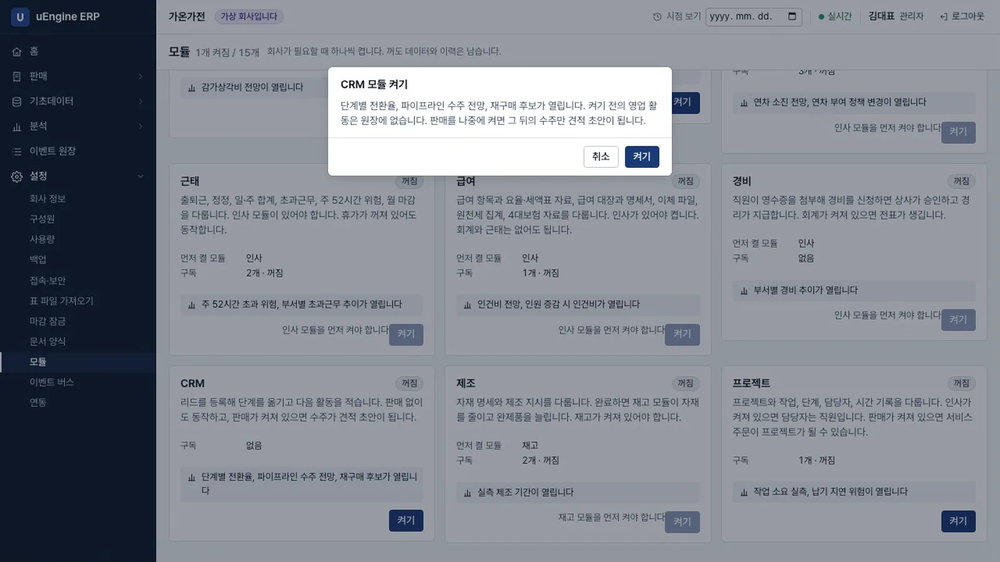
CRM 켜기 - 리드 등록. 박영업으로 CRM → 영업 기회 → 새로 만들기에서 제목
여름 제습기 납품, 회사명한빛상사를 적습니다. 예상 금액에-5를 넣고 저장하면예상 금액 항목은 0 이상이어야 합니다라는 안내가 나오고 저장되지 않습니다.2500000으로 고치고 다음 활동을 적어 저장합니다.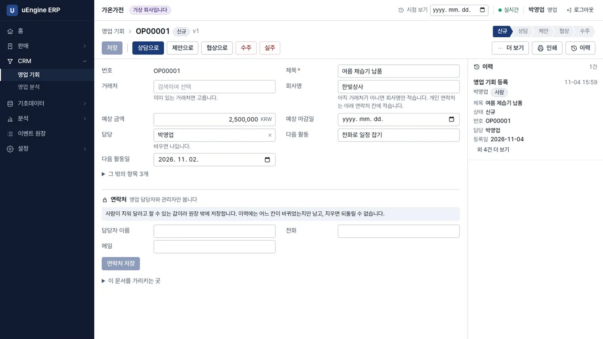
리드 - 연락처. 담당자 이름과 전화를 넣고 연락처 저장을 누릅니다. 녹화에서 원장을 검색해 전화번호가 없는 것을 확인했습니다.
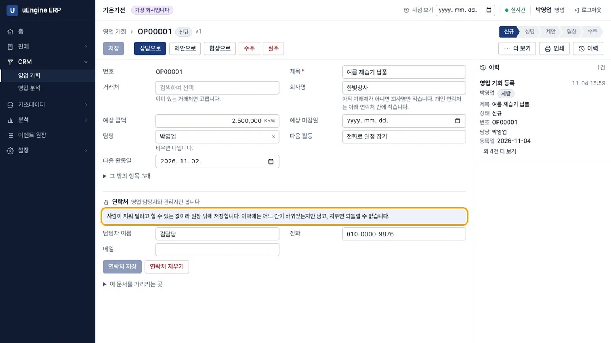
연락처 - 칸반. 목록에서 활동일이 지나면
활동 지남이 붙습니다. 칸반을 누르면 칸마다 건수와 금액이 나옵니다. 단추를 눌러 다음 단계로 옮깁니다. 협상 칸에는 단추가 없습니다.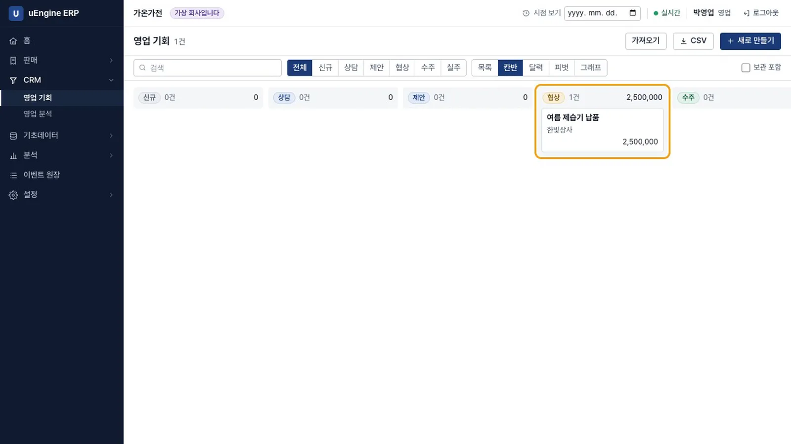
칸반 - 실주와 다시 열기. 카드를 열어 실주를 누르고 사유
가격을 고릅니다. 사유는 전환율 분석에 쓰입니다. 다시 열기를 누르면 신규로 돌아갑니다.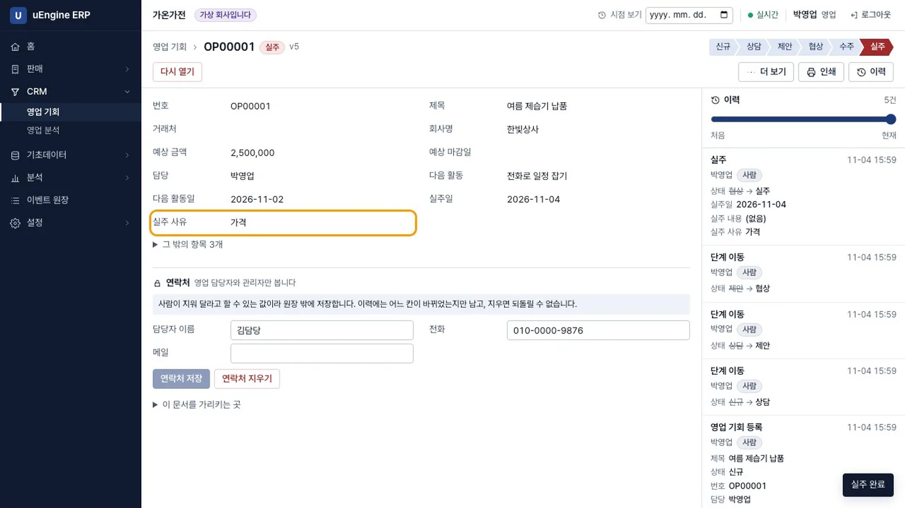
실주 - 수주. 수주를 누르면 판매 모듈이 이벤트를 받아 견적 초안을 만들고, 아래 이 건에서 나온 견적에
S00001이 나옵니다.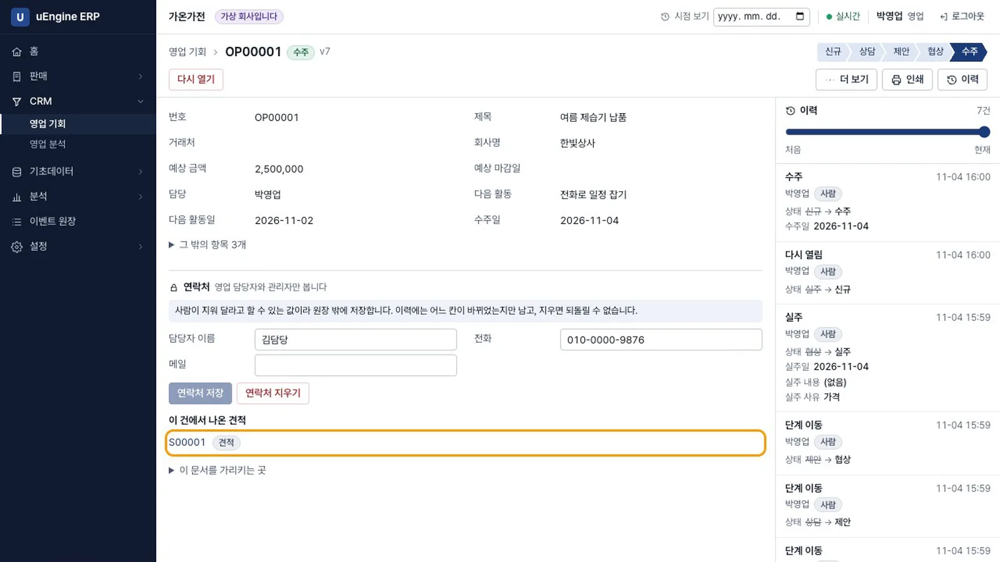
수주 - 견적 초안. 링크를 누르면 거래처
한빛상사가 채워진 견적이 열립니다. 메모 줄에영업 기회 OP00001: 여름 제습기 납품. 예상 금액 2,500,000이 적혀 있습니다. 품목 입력과 주문 확정은 사람이 합니다.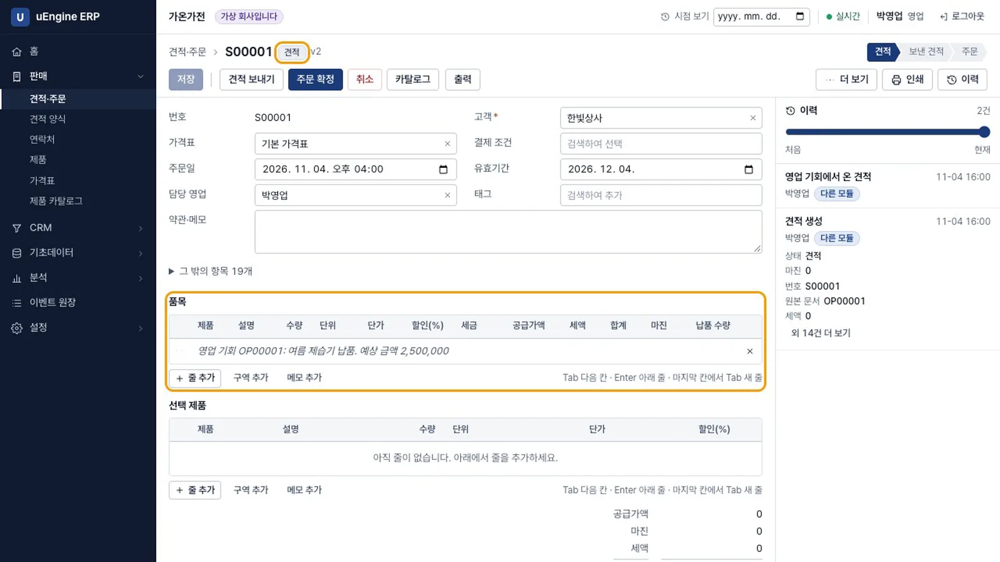
견적 초안 - 근거가 모자랄 때. CRM → 영업 분석의 수주 전망은 근거 부족이고 범위로만 표시됩니다. 끝난 거래가 20건 이상이어야 합니다.
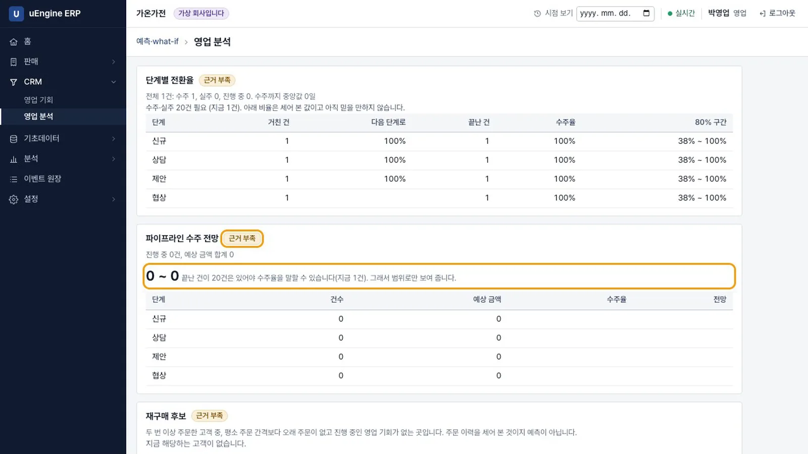
근거 부족 - 근거가 쌓이면. 끝난 거래 20건과 진행 중 3건(합계 6,200,000)을 넣었습니다. 전망은 3,247,560, 80% 구간은 2,403,120 ~ 4,070,920입니다. 협상 단계의 수주율은 52%, 구간은 39% ~ 66%입니다.
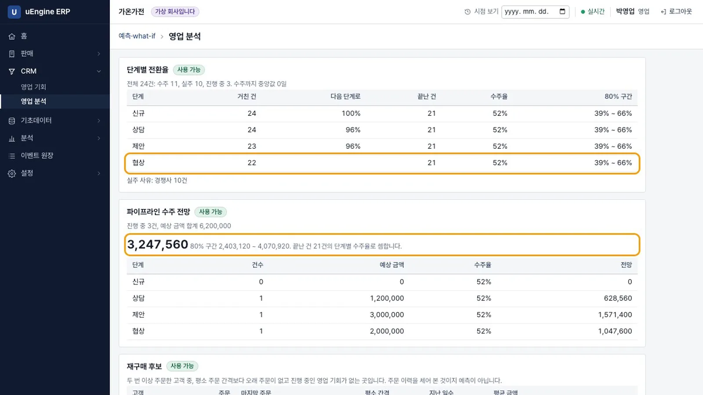
수주 전망 - 재구매 후보. 단골 둘은 평소 주문 간격이 30일인데 60일째 주문이 없습니다. 영업 기회 만들기를 누르면 그 거래처로 새 영업 기회가 열립니다.
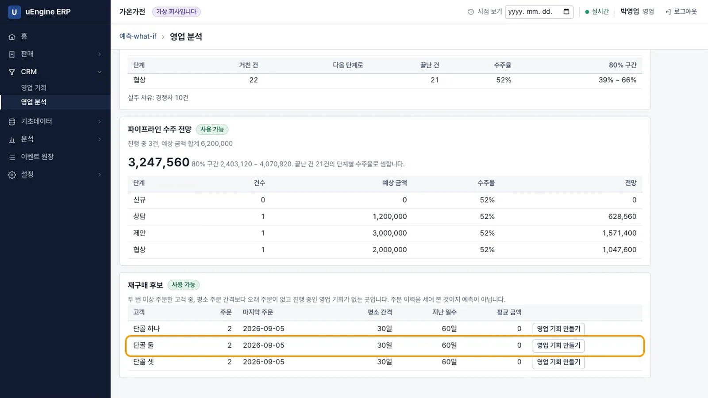
재구매 후보 - 프로젝트 켜기. 관리자로 프로젝트의 켜기를 누릅니다. 고른 날짜 이후의 서비스 주문만 프로젝트가 된다고 알려 줍니다.
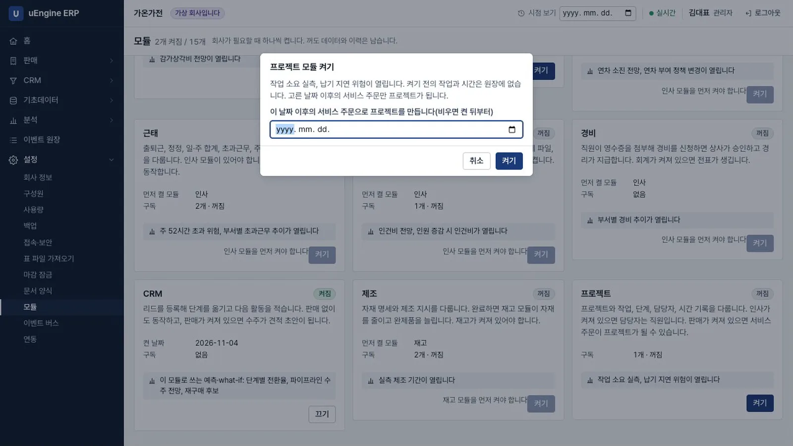
프로젝트 켜기 - 프로젝트. 김프로로 프로젝트 → 프로젝트 → 새로 만들기에서 이름
공조 설비 납품을 적습니다. 납기가 시작일보다 빠르면납기 항목은 시작일보다 빠를 수 없습니다라는 안내가 나오고 저장되지 않습니다.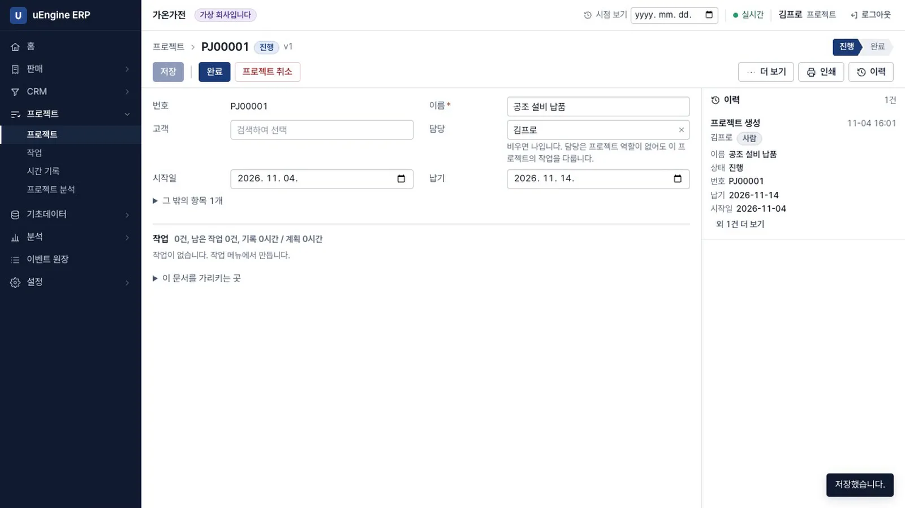
프로젝트 - 작업. 프로젝트 → 작업 → 새로 만들기에서 이름
현장 설치, 프로젝트, 담당 구성원이작업, 계획 시간8을 넣습니다. 인사가 꺼져 있어 담당자는 구성원입니다.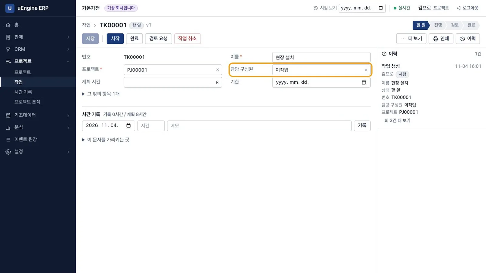
작업 - 칸반과 시간 기록. 이작업으로 칸반에서 작업을 시작하고 카드를 엽니다. 시간에
25를 넣으면24시간을 넘을 수 없습니다라는 안내가 나오고 기록되지 않습니다.6.5를 기록하면기록 6.5시간 / 계획 8시간입니다. 같은 날18을 더하면24시간을 넘습니다라는 안내가 나오고 기록되지 않습니다.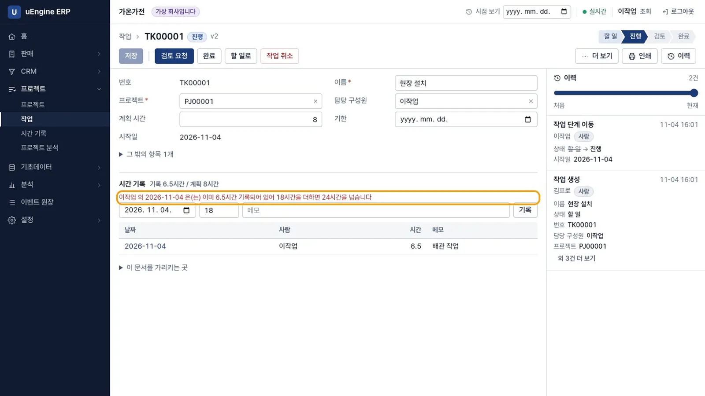
시간 기록 - 완료 막기. 김프로로 프로젝트의 완료를 누르면
끝나지 않은 작업이 있습니다: 현장 설치라는 안내가 나오고 완료되지 않습니다. 작업을 완료한 뒤 프로젝트를 완료합니다.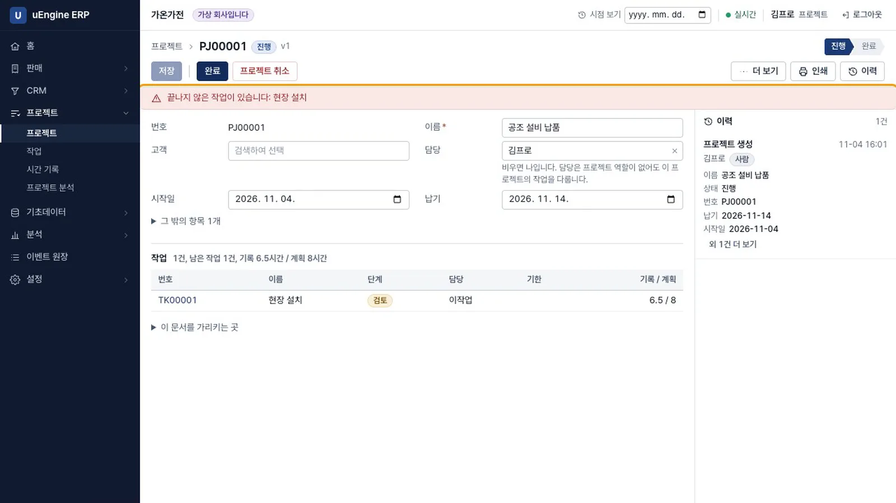
완료 막힘 - 서비스 주문. 관리자로 제품
설치 용역을 서비스, 단위 시간으로 만들고 주문하면 프로젝트 생성을 켭니다. 그 제품 12시간의 주문을 확정하면 프로젝트PJ00002가 생기고 작업 1건, 계획 시간은 12시간입니다. 원본 주문 번호가 적혀 있습니다.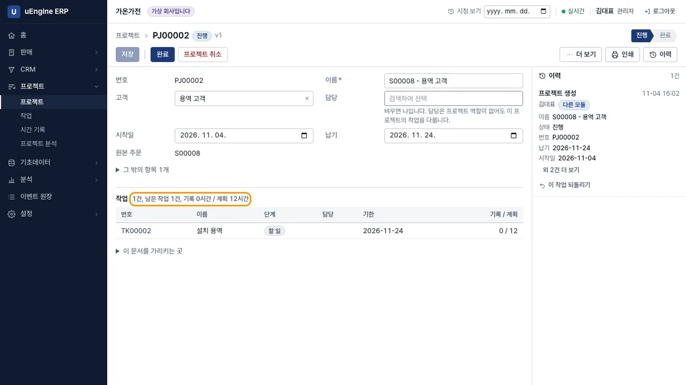
주문에서 온 프로젝트 - 인사를 켠 뒤. 인사를 켜고 직원을 등록하면 새 작업에서 구성원 칸이 사라지고 담당 직원 칸이 나옵니다.
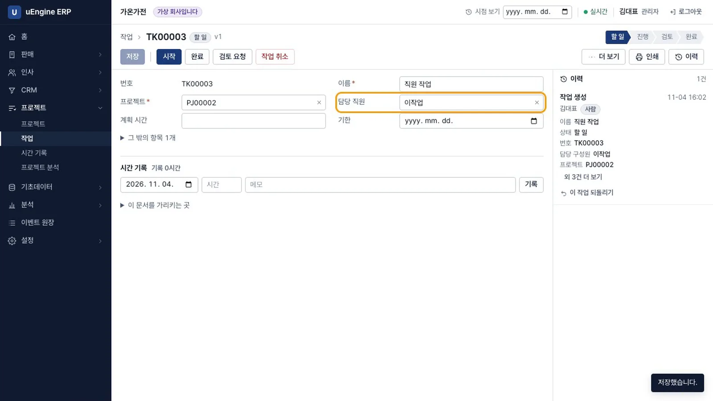
담당 직원 - 분석. 프로젝트 → 프로젝트 분석은 처음에 근거 부족입니다. 납기 지연 위험은
모름이고, 근태 이벤트가 없어 대조하지 않는다는 안내가 나옵니다. 지난 작업 20건을 넣으면 사용 가능이 되고 실측이 계획의 150%로 나옵니다.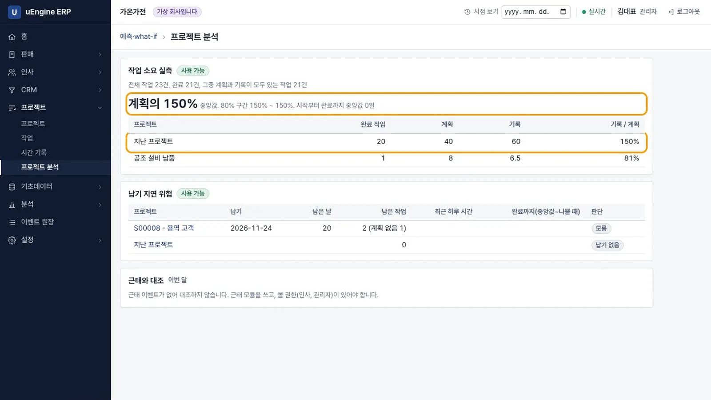
프로젝트 분석
확인 문제#
수주하면 주문이 바로 확정되나요?
아닙니다. 판매 모듈이 견적 초안을 만들 뿐이고, 품목을 넣고 주문을 확정하는 것은 사람입니다.
수주 전망이 범위로만 나오는 때는 언제인가요?
끝난 건이 20건보다 적을 때입니다. 이때는 수주율을 표시하지 않고 범위로만 보여 줍니다.
판매 모듈은 프로젝트를 어떻게 아나요?
모릅니다. 프로젝트 모듈이 주문 확정 이벤트를 구독해 프로젝트를 만듭니다.